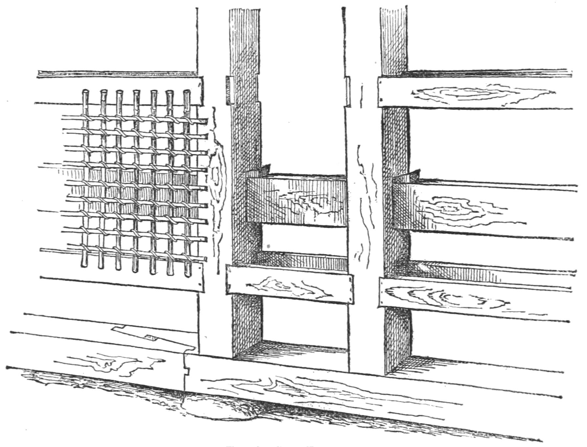
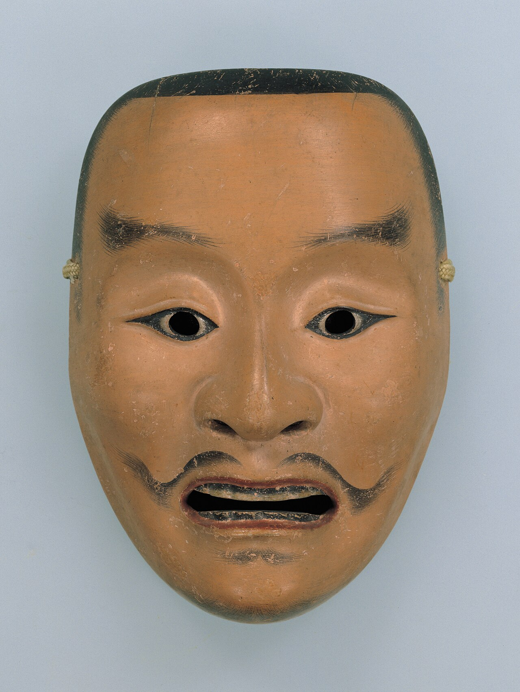
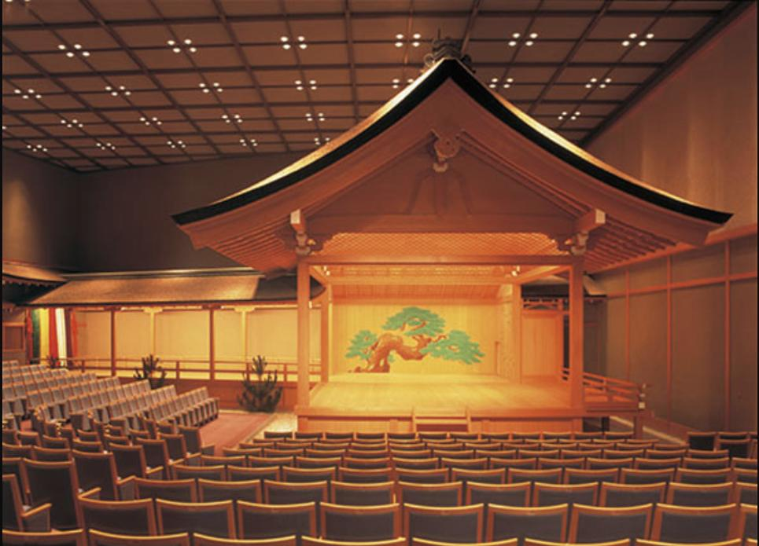

Japan with
Japan withA friend in Tokyo says your weekend plan is “a little difficult.” Your host insists you need not bring anything, then seems delighted when you arrive with a small gift. A colleague agrees that an idea is “interesting,” yet the project never moves. Were these people lying? Or did you hear a social message as if it were a literal transcript?
Two Japanese words are often recruited to explain the puzzle. 建前, tatemae, is the position shown in public: what a role, relationship or situation calls for. 本音, honne, is a person’s privately felt motive, desire or opinion. The pair matters. But “fake face versus real self” turns a flexible social vocabulary into a stereotype about an entire country.
The words began somewhere more physical

The characters in tatemae look architectural: 建, “build,” and 前, “front.” Japanese dictionaries preserve a literal construction sense—the raising of the principal frame—and a social one: an official principle or outward policy. Honne combines 本, “original” or “true,” with 音, “sound.” Its older sense is an instrument’s natural tone; by the early twentieth century, dictionaries record it as words from the heart, including feelings difficult to say aloud.
The etymology is illuminating, but it is not proof that Japanese people live behind a façade. A frame supports a house; it is not a counterfeit house. Likewise, a social form can support an encounter. “Thank you for inviting me” can be true even when “I do not want to attend” is true at the same time.
Why “a little…” can become a complete answer
Consider the compact phrase ちょっと…, chotto…, literally “a little…” If you invite someone to Sunday dinner and hear Nichiyōbi wa chotto…—“As for Sunday, it’s a little…”—the missing ending often performs the refusal. The pause, the apologetic voice and the unfinished sentence let both people leave without forcing a blunt rejection into the foreground.
How about Sunday?
Sunday is a little…
This time won’t work.
Research on Japanese refusals documents incomplete sentences, apologies, reasons and expressions of regret as ways to soften a relationship-threatening act. Yet the cliché “Japanese never say no” is false. People say iya, dekimasen and many other direct negatives. One cross-cultural study even found Japanese students were not more indirect than American students in equal-status request and complaint situations. Context—especially power, closeness and risk—changed the choice.
The practical skill is not mind reading. It is recognizing a closed door when no alternative follows. “It’s difficult,” “I’ll think about it,” or “next time” may be a no; they can also be literal. If the stakes matter, ask a low-pressure clarifying question: “Would another day work, or should we leave it for now?”
Public courtesy is not uniquely Japanese

“Great to see you,” professional diplomacy, customer-service warmth, a carefully edited social feed: every society separates what can be expressed in a situation from everything a person thinks. Japan differs partly because the contrast has familiar names and is discussed openly.
Even within Japan, there is no national decoder ring. A teenager with friends, a nurse speaking to a patient, a manager writing minutes, and siblings arguing at home do not use one fixed style. Uchi and soto—inside and outside relationships—matter, but they move. A coworker can become a confidant; family can feel unsafe; an anonymous online account can reveal what dinner-table intimacy cannot.
Nor is honne morally pure. A private feeling can be selfish, prejudiced, impulsive or simply wrong. Tatemae can protect privacy, maintain professional fairness and give a group time to negotiate. It can also conceal harassment, block dissent or preserve an unjust hierarchy. The value depends on what the form protects—and whom it silences.
Sometimes the kindest sentence is not the fullest confession. Sometimes the necessary sentence is the one politeness keeps delaying.
The concept is useful—and politically convenient
Institutions have tatemae too. A company may publicly promise work–life balance while informal expectations reward late-night availability. A government may state a universal principle while negotiating exceptions. In this register, calling something tatemae can be sharp criticism: the announced ideal and lived reality have separated too far.
That is different from a guest politely praising dinner. Lumping both under “Japanese people hide what they think” removes power from the analysis. Ask who sets the public line, who benefits from ambiguity, and whether anyone can safely disagree. The same skill that cushions a small refusal can become harmful when it prevents a worker, student or family member from naming a serious problem.
This is why the phrase can be turned against Japan in lazy travel writing. It makes every smile suspicious and lets the outsider imagine that only they can see the “real” country. It also denies Japanese speakers the ordinary human freedom to be tactful, conflicted, private or still undecided.
Where the stage metaphor helps—and fails

A stage is useful because roles are real while they are performed. The employee, friend, host and customer are not fake identities; each relationship brings different obligations and different parts of the self into view. Sociologist Erving Goffman made a related argument about everyday self-presentation far beyond Japan.
The metaphor fails when it implies a single actor hidden beneath removable masks. People often discover their feelings by speaking, not before. An ethnographic study of digital communication in Japan describes stickers and emoji as tools through which people shape and even come to know emotion. Honne is not always a finished script waiting backstage.
How to respond without becoming a detective
- Listen for the alternative.“Sunday is difficult, but Tuesday works” is negotiation. “Sunday is a little…” followed by silence is probably closure.
- Make refusal safe.Offer “no problem if not” before asking for a favor. You often receive a clearer answer when the relationship is not at stake.
- Confirm decisions, not feelings.For bookings, deadlines and money, ask what will happen next and put it in writing. Do not demand a private confession.
- Use directness when safety requires it.Emergency instructions, consent, allergies, harassment and legal obligations should not depend on reading the air.
- Allow individual variation.A Japanese person who speaks directly is not “less Japanese,” and an indirect answer is not automatically a hidden insult.
If you want one phrase, try 難しければ大丈夫です, muzukashikereba daijōbu desu: “If it’s difficult, that’s okay.” It lowers the price of honesty. For a clear check, つまり、今回はなしですね？—tsumari, konkai wa nashi desu ne?—means “So, we’re not doing it this time, right?” Tone matters; use it gently.
Practice these patterns free, with no signup, in the Japanese Training Lab. Then listen for them in real settings instead of treating them as a codebook.
The last paradox
Japan’s vocabulary for public and private truth seems to promise access to what people “really” think. The wiser lesson is the opposite. Other people’s inner lives are not a country to conquer. Good communication creates conditions in which a person can speak more plainly, verifies what needs to be explicit, and respects what does not belong to us.
Tatemae becomes dangerous when appearance matters more than harm. Honne becomes dangerous when “I was only being honest” excuses cruelty. Between them lies the difficult, ordinary work of relationship: saying enough truth for the moment, and making the next truth safer to say.
Sources and further reading
- Nipponica via Kotobank — Tatemae and honne
- Japanese dictionaries via Kotobank — Honne
- Jane Bachnik — “Tatemae/Honne,” Blackwell Encyclopedia of Sociology
- National Institute for Japanese Language and Linguistics bibliography — direct and indirect expressions
- University of Minnesota CARLA — Japanese refusal strategies
- Hiroko Spees — A Cross-Cultural Study of Indirectness
- Wang & Haapio-Kirk — emotion work in digital communication
- Ishii, Saravia Vargas & Saravia Vargas — Tatemae and honne in literature
This article describes concepts and recurring communicative patterns, not a personality shared by all Japanese people. Examples are practical illustrations, not rules for diagnosing anyone’s private motives.

Listen to the language in real Japan.
Walk everyday streets with me on TikTok LIVE, then learn useful Japanese while playing in DraMap for iPhone.
Japan Unfolded is independently edited by Yuji Shimizu, creator of DraMap. The app link is publisher promotion; interpretations and examples are editorial judgments based on the cited sources.